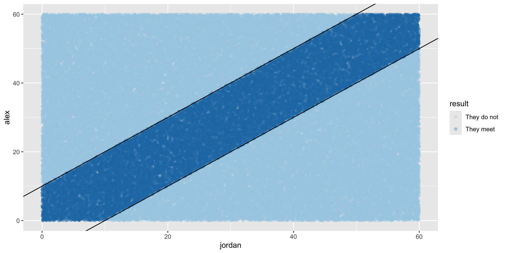
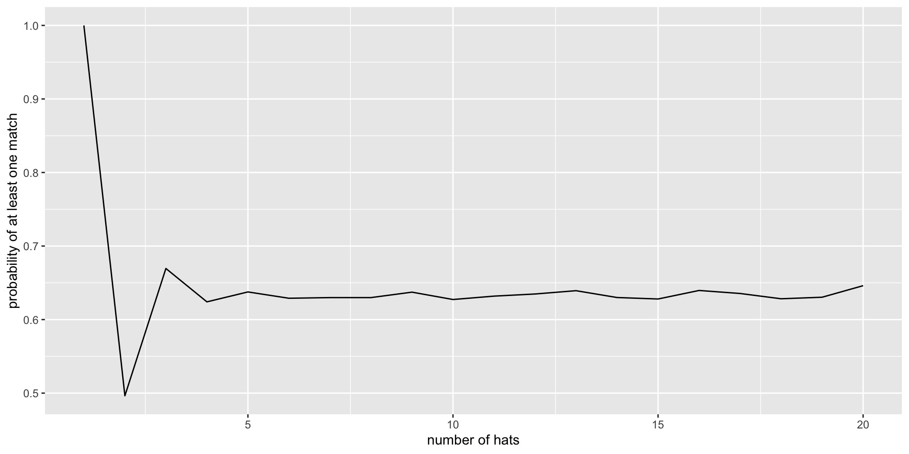
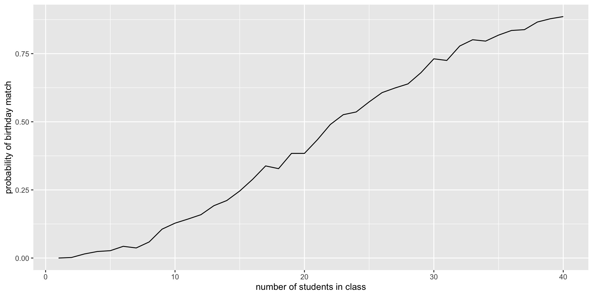
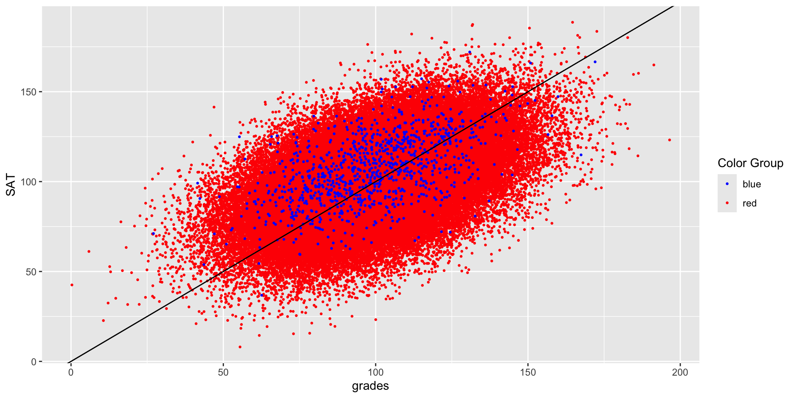
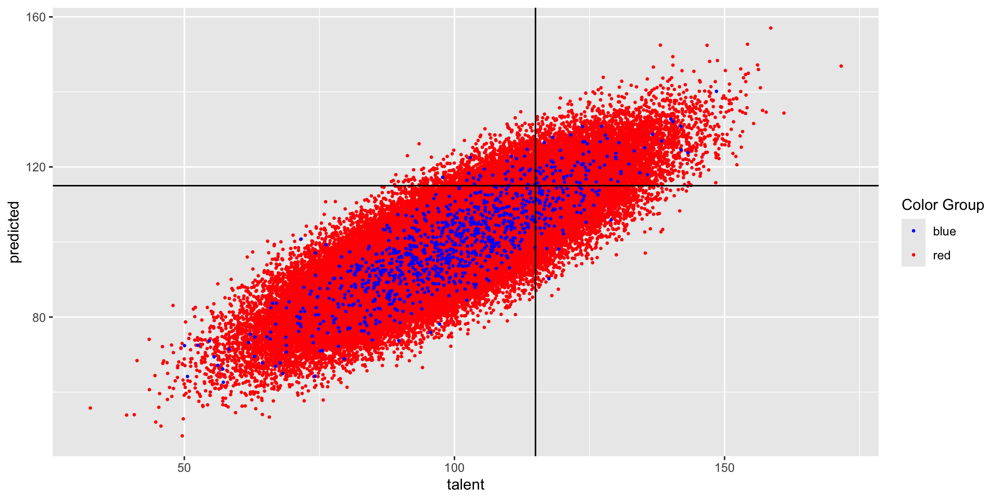
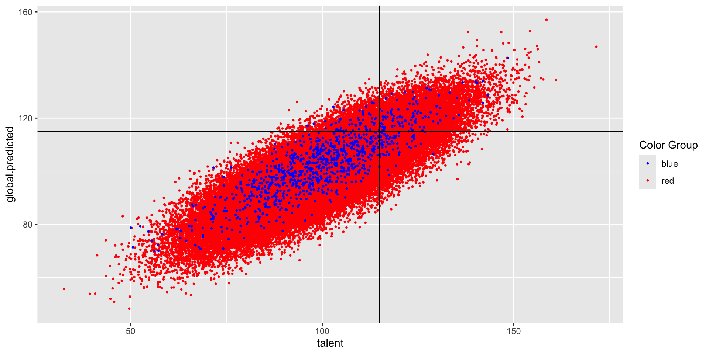
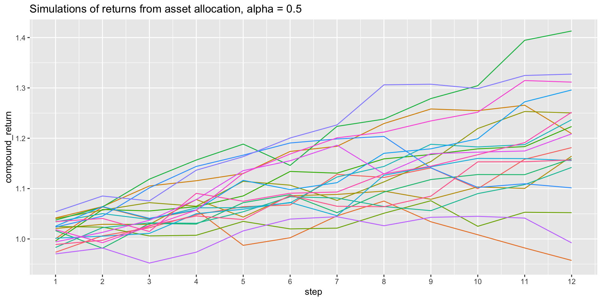
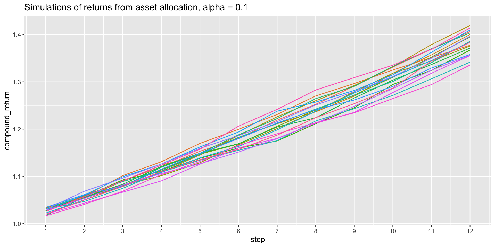
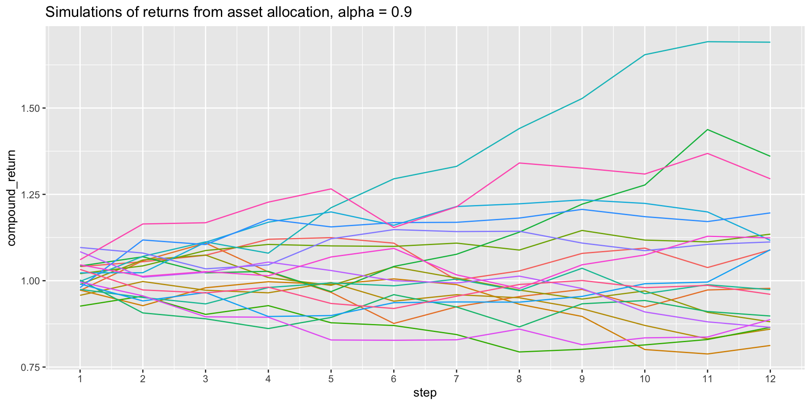
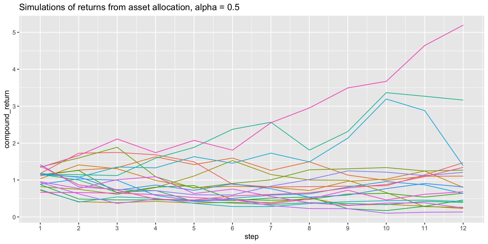

data.frame(value = c(-2:2)) |>
mutate(abs_value = ifelse(value >=0, value, -value)) # abs val value abs_value
1 -2 2
2 -1 1
3 0 0
4 1 1
5 2 2March 12 + 24, 2025
The goal of simulating a complicated model is not only to create a program which will provide the desired results. We also hope to be able to write code such that:
ifelse()data.frame(value = c(-2:2)) |>
mutate(abs_value = ifelse(value >=0, value, -value)) # abs val value abs_value
1 -2 2
2 -1 1
3 0 0
4 1 1
5 2 2case_when()set.seed(4747)
diamonds |> select(carat, cut, color, price) |>
sample_n(20) |>
mutate(price_cat = case_when(
price > 10000 ~ "expensive",
price > 1500 ~ "medium",
TRUE ~ "inexpensive"))# A tibble: 20 × 5
carat cut color price price_cat
<dbl> <ord> <ord> <int> <chr>
1 1.23 Very Good F 10276 expensive
2 0.35 Premium H 706 inexpensive
3 0.7 Good E 2782 medium
4 0.4 Ideal D 1637 medium
5 0.53 Ideal G 1255 inexpensive
6 2.22 Ideal G 14637 expensive
7 0.3 Ideal G 878 inexpensive
8 1.05 Ideal H 4223 medium
9 0.53 Premium E 1654 medium
10 1.7 Ideal H 7068 medium
11 0.31 Good E 698 inexpensive
12 0.31 Ideal F 840 inexpensive
13 1.03 Ideal H 4900 medium
14 0.31 Premium G 698 inexpensive
15 1.56 Premium G 8858 medium
16 1.71 Premium G 11032 expensive
17 1 Good E 5345 medium
18 1.86 Ideal J 10312 expensive
19 1.08 Very Good E 3726 medium
20 0.31 Premium E 698 inexpensivesample()sampling, shuffling, and resampling: sample()
set.seed(47)
alph <- letters[1:10]
alph [1] "a" "b" "c" "d" "e" "f" "g" "h" "i" "j"sample(alph, 5, replace = FALSE) # sample (from a population)[1] "i" "b" "g" "d" "a"sample(alph, 5, replace = TRUE) # sample (from a population)[1] "j" "g" "f" "i" "f"sample(alph, 10, replace = FALSE) # shuffle [1] "f" "h" "i" "e" "g" "d" "c" "j" "b" "a"sample(alph, 10, replace = TRUE) # resample [1] "e" "j" "e" "b" "e" "c" "f" "a" "e" "a"set.seed()What if we want to be able to generate the same random numbers (here on the interval from 0 to 1) over and over?
set.seed(4747)
runif(4, 0, 1) # random uniform numbers[1] 0.1949071 0.3390270 0.5147919 0.4516470set.seed(123)
runif(4, 0, 1) # random uniform numbers[1] 0.2875775 0.7883051 0.4089769 0.8830174set.seed(4747)
runif(4, 0, 1) # random uniform numbers[1] 0.1949071 0.3390270 0.5147919 0.4516470Consider a situation where Alex and Jordan plan to meet to study in their college campus center (Mosteller 1987; Baumer, Kaplan, and Horton 2021). They are both impatient people who will wait only 10 minutes for the other before leaving.
But their planning was incomplete. Alex said, “Meet me between 7 and 8 tonight at the student center.” When should Jordan plan to arrive at the campus center? And what is the probability that they actually meet?
Assume that Alex and Jordan are both equally likely to arrive at the campus center anywhere between 7pm and 8pm.
meet_func <- function(nada){
data.frame(
alex = runif(1, min = 0, max = 60),
jordan = runif(1, min = 0, max = 60)) |>
mutate(result = ifelse(abs(alex - jordan) <= 10,
"They meet",
"They do not"
)
)
}n <- 100000
tic()
meet_map <- 1:n |>
map(meet_func) |>
list_rbind()
toc()31.887 sec elapsedtic()
meet_for <- data.frame()
for(i in c(1:n)){
meet_for <- meet_for |> rbind(
data.frame(
alex = runif(1, min = 0, max = 60),
jordan = runif(1, min = 0, max = 60)) |>
mutate(result = ifelse(abs(alex - jordan) <= 10,
"They meet",
"They do not"
)))
}
toc()156.773 sec elapsedtic()
meet_vect <- data.frame(
alex = runif(n, min = 0, max = 60),
jordan = runif(n, min = 0, max = 60)) |>
mutate(result = ifelse(abs(alex - jordan) <= 10,
"They meet",
"They do not"
)
)
toc()0.008 sec elapsedThe results themselves are equivalent. Differing values due to randomness in the simulation.
meet_map |>
group_by(result) |>
summarize(number = n())|>
mutate(proprotion = number / sum(number))# A tibble: 2 × 3
result number proprotion
<chr> <int> <dbl>
1 They do not 69600 0.696
2 They meet 30400 0.304meet_for |>
group_by(result) |>
summarize(number = n())|>
mutate(proprotion = number / sum(number))# A tibble: 2 × 3
result number proprotion
<chr> <int> <dbl>
1 They do not 69408 0.694
2 They meet 30592 0.306meet_vect |>
group_by(result) |>
summarize(number = n()) |>
mutate(proprotion = number / sum(number))# A tibble: 2 × 3
result number proprotion
<chr> <int> <dbl>
1 They do not 69529 0.695
2 They meet 30471 0.305meet_map |>
ggplot(aes(x = jordan, y = alex, color = result)) +
geom_point(alpha = 0.3) +
geom_abline(intercept = 10, slope = 1) +
geom_abline(intercept = -10, slope = 1) +
scale_color_brewer(palette = "Paired")
10 people are at a party, and all of them are wearing hats. They each place their hat in a pile; when they leave, they choose a hat at random. What is the probability at least one person selected the correct hat?
hats <- c(1:10)
hats [1] 1 2 3 4 5 6 7 8 9 10set.seed(47)
random_hats <- sample(hats, size = 10, replace = FALSE)
hats [1] 1 2 3 4 5 6 7 8 9 10random_hats [1] 9 2 7 4 1 10 6 3 5 8hats == random_hats [1] FALSE TRUE FALSE TRUE FALSE FALSE FALSE FALSE FALSE FALSE# TRUE is 1, FALSE is 0
sum(hats == random_hats)[1] 2# did at least one person get their hat?
sum(hats == random_hats) > 0[1] TRUEset.seed(47)
hats <- c(1:10)
random_hats <- sample(hats, size = 10, replace = FALSE)
sum(hats == random_hats) > 0[1] TRUE10hat_match <- function(n){
hats <- c(1:n)
random_hats <- sample(hats, size = n, replace = FALSE)
sum(hats == random_hats) > 0
}
hat_match(10)[1] TRUEhat_match(47)[1] TRUEmap_lgl(c(1:10), ~hat_match(n = 10)) [1] TRUE FALSE FALSE TRUE TRUE TRUE TRUE TRUE FALSE TRUEmap_lgl(c(1:10), ~hat_match(n = 10)) |>
mean()[1] 0.5set.seed(4747)
num_iter <- 10000
map_lgl(c(1:num_iter), ~hat_match(n = 10)) |>
mean()[1] 0.6329set.seed(123)
num_iter <- 10000
map_lgl(c(1:num_iter), ~hat_match(n = 10)) |>
mean()[1] 0.6333hat_match_prob <- function(n, reps){
prob <- map_lgl(c(1:reps), ~hat_match(n = n)) |>
mean()
return(data.frame(match_prob = prob, num_hats = n))
}
hat_match_prob(47, 200) match_prob num_hats
1 0.62 47hat_match_prob <- function(n, reps){
prob <- map_lgl(c(1:reps), ~hat_match(n = n)) |>
mean()
return(data.frame(match_prob = prob, num_hats = n))
}
set.seed(47)
map(c(1:20), hat_match_prob, reps = num_iter) |>
list_rbind() match_prob num_hats
1 1.0000 1
2 0.4964 2
3 0.6695 3
4 0.6241 4
5 0.6376 5
6 0.6290 6
7 0.6299 7
8 0.6299 8
9 0.6373 9
10 0.6273 10
11 0.6319 11
12 0.6348 12
13 0.6393 13
14 0.6300 14
15 0.6280 15
16 0.6396 16
17 0.6355 17
18 0.6283 18
19 0.6304 19
20 0.6461 20set.seed(47)
num_iter <- 10000
map(c(1:20), hat_match_prob, reps = num_iter) |>
list_rbind() |>
ggplot(aes(x = num_hats, y = match_prob)) +
geom_line() +
labs(y = "probability of at least one match",
x = "number of hats")
What is the probability that in a room of 28 people, at least 2 of them have the same birthday?
set.seed(7474)
class_birthdays <- sample(c(1:365), size = 28, replace = TRUE)
class_birthdays [1] 65 340 246 244 355 248 298 271 363 173 307 260 195 300 189 154 319 51 139
[20] 241 275 271 102 363 201 165 35 13duplicated(class_birthdays) [1] FALSE FALSE FALSE FALSE FALSE FALSE FALSE FALSE FALSE FALSE FALSE FALSE
[13] FALSE FALSE FALSE FALSE FALSE FALSE FALSE FALSE FALSE TRUE FALSE TRUE
[25] FALSE FALSE FALSE FALSEsum(duplicated(class_birthdays))[1] 2class_duplicates <- function(unicorn){
class_birthdays <- sample(c(1:365), size = 28, replace = TRUE)
num_duplicates <- sum(duplicated(class_birthdays))
return(ifelse(num_duplicates > 0, 1, 0))
}
class_duplicates()[1] 0class_duplicates()[1] 1map_dbl(c(1:10), class_duplicates) [1] 0 1 0 0 0 0 0 0 1 0class_duplicates <- function(class_size){
class_birthdays <- sample(c(1:365), size = class_size, replace = TRUE)
num_duplicates <- sum(duplicated(class_birthdays))
return(ifelse(num_duplicates > 0, 1, 0))
}
set.seed(47)
num_stud <- 28
map_dbl(c(1:10), ~class_duplicates(class_size = num_stud)) [1] 0 1 0 1 1 1 1 0 1 0set.seed(47)
num_stud <- 28
num_class <- 1000
map_dbl(c(1:num_class), ~class_duplicates(class_size = num_stud)) |>
mean()[1] 0.649set.seed(47)
num_stud_upper <- 28
num_class <- 100
birth_match_prob <- function(num_stud, reps){
prob <- map_dbl(c(1:reps), ~class_duplicates(class_size = num_stud)) |>
mean()
return(data.frame(match_prob = prob, num_stud = num_stud))
}
map(c(1:num_stud_upper), birth_match_prob, reps = num_class) |>
list_rbind() match_prob num_stud
1 0.00 1
2 0.00 2
3 0.00 3
4 0.00 4
5 0.03 5
6 0.03 6
7 0.04 7
8 0.06 8
9 0.11 9
10 0.13 10
11 0.14 11
12 0.18 12
13 0.18 13
14 0.25 14
15 0.25 15
16 0.32 16
17 0.37 17
18 0.43 18
19 0.44 19
20 0.40 20
21 0.43 21
22 0.47 22
23 0.48 23
24 0.47 24
25 0.61 25
26 0.67 26
27 0.63 27
28 0.66 28set.seed(123)
num_stud_upper <- 40
num_class <- 1000
map(c(1:num_stud_upper), birth_match_prob, reps = num_class) |>
list_rbind() |>
ggplot(aes(x = num_stud, y = match_prob)) +
geom_line() +
labs(y = "probability of birthday match",
x = "number of students in class")
Population:
talent ~ Normal (100, 15)
grades ~ Normal (talent, 15)
SAT ~ Normal (talent, 15)The example is taken directly (and mostly verbatim) from a blog by Aaron Roth Algorithmic Unfairness Without Any Bias Baked In.
College wants to admit students with
talent > 115
… but they only have access to grades and SAT which are noisy estimates of talent.
talent is known for existing students)talent based on grades and SATtalent is above 115But there is one difference: the Blues have more money than the Reds, so they each take the SAT twice, and report only the highest of the two scores to the college. This results in a small but noticeable bump in their average SAT scores, compared to the Reds.
The value of
SATmeans something different for the Reds versus the Blues
(They have different feature distributions.)

Red model (SAT taken once):
# A tibble: 3 × 5
term estimate std.error statistic p.value
<chr> <dbl> <dbl> <dbl> <dbl>
1 (Intercept) 33.2 0.152 218. 0
2 SAT 0.334 0.00149 224. 0
3 grades 0.334 0.00149 225. 0Blue model (SAT is max score of two):
# A tibble: 3 × 5
term estimate std.error statistic p.value
<chr> <dbl> <dbl> <dbl> <dbl>
1 (Intercept) 25.3 1.60 15.8 2.04e- 50
2 SAT 0.432 0.0161 26.7 3.35e-119
3 grades 0.277 0.0154 18.0 6.83e- 63Generate new data, use the two models separately.
Can the models predict if a student has talent > 115?


# A tibble: 2 × 5
color tpr fpr fnr error
<chr> <dbl> <dbl> <dbl> <dbl>
1 blue 0.503 0.0379 0.497 0.109
2 red 0.509 0.0378 0.491 0.109What if we fit only one model to the entire dataset?
After all, there are laws against using protected classes to make decisions (housing, jobs, money loans, college, etc.)
# A tibble: 3 × 5
term estimate std.error statistic p.value
<chr> <dbl> <dbl> <dbl> <dbl>
1 (Intercept) 33.1 0.151 219. 0
2 SAT 0.334 0.00148 225. 0
3 grades 0.334 0.00148 226. 0(The coefficients kinda look like the red model…)

One model:
# A tibble: 2 × 5
color tpr fpr fnr error
<chr> <dbl> <dbl> <dbl> <dbl>
1 blue 0.619 0.0627 0.381 0.112
2 red 0.507 0.0375 0.493 0.109Two separate models:
# A tibble: 2 × 5
color tpr fpr fnr error
<chr> <dbl> <dbl> <dbl> <dbl>
1 blue 0.503 0.0379 0.497 0.109
2 red 0.509 0.0378 0.491 0.109with two populations that have different feature distributions, learning a single classifier (that is prohibited from discriminating based on population) will fit the bigger of the two populations
depending on the nature of the distribution difference, it can be either to the benefit or the detriment of the minority population
no explicit human bias, either on the part of the algorithm designer or the data gathering process
the problem is exacerbated if we artificially force the algorithm to be group blind
well-intentioned “fairness” regulations prohibiting decision makers form taking sensitive attributes into account can actually make things less fair and less accurate at the same time
Taken from Risk Analysis Using Monte Carlo Simulations in R.
rnorm()rnorm() calculates random normal values
rnorm(3)[1] 1.0598770 0.2813142 0.1483487rnorm(3, mean = 0, sd = 1)[1] -1.5222088 -0.2609479 0.1393759rnorm(4, mean = 47, sd = 5)[1] 48.91283 45.11651 50.69179 42.14037Task: to model an asset allocation problem where you decide what portion of wealth should be allocated to risk-free investment or high-risk investment
calculate_return <- function(step, alpha) {
risk_free_rate <- 1.03
risky_rate <- rnorm(1, mean = 0, sd = 1) * 0.05 + 1
return(data.frame(step = step,
return = (1 - alpha) * risk_free_rate + alpha * risky_rate))
}
calculate_return("unicorn", 0.47) step return
1 unicorn 1.034815(half risky, half risk free)
decision_steps <- 12
pmap(data.frame(step = c(1:decision_steps),
alpha = rep(0.5, decision_steps)),
calculate_return) |>
list_rbind() step return
1 1 1.0244265
2 2 0.9740712
3 3 1.0111959
4 4 1.0382488
5 5 1.0019058
6 6 0.9847674
7 7 1.0296142
8 8 0.9924038
9 9 1.0381949
10 10 1.0088956
11 11 1.0370043
12 12 1.0107057runs <- 10
decision_steps <- 12
run_func <- function(run, steps, alpha){
pmap(data.frame(step = c(1:steps),
alpha = rep(alpha, steps)),
calculate_return) |>
list_rbind() |>
cbind(run_number = as.factor(run))
}
run_func("happy", 12, 0.5) step return run_number
1 1 0.9972576 happy
2 2 1.0503818 happy
3 3 1.0133106 happy
4 4 1.0305766 happy
5 5 1.0424264 happy
6 6 1.0278066 happy
7 7 1.0088744 happy
8 8 1.0280513 happy
9 9 1.0270015 happy
10 10 1.0495620 happy
11 11 1.0483569 happy
12 12 1.0089000 happymap(c(1:runs), run_func,
steps = decision_steps,
alpha = 0.5) |>
list_rbind() step return run_number
1 1 1.0037332 1
2 2 1.0305053 1
3 3 1.0177365 1
4 4 0.9851848 1
5 5 1.0200471 1
6 6 0.9777514 1
7 7 1.0139097 1
8 8 1.0394459 1
9 9 1.0311656 1
10 10 1.0111325 1
11 11 1.0600142 1
12 12 0.9529528 1
13 1 1.0511925 2
14 2 1.0188551 2
15 3 1.0546398 2
16 4 1.0286009 2
17 5 1.0090312 2
18 6 1.0116230 2
19 7 0.9982508 2
20 8 1.0397553 2
21 9 0.9748453 2
22 10 0.9994628 2
23 11 1.0325967 2
24 12 1.0265163 2
25 1 0.9846161 3
26 2 1.0106626 3
27 3 1.0085478 3
28 4 1.0253148 3
29 5 0.9879959 3
30 6 1.0761028 3
31 7 1.0095107 3
32 8 1.0417969 3
33 9 1.0299429 3
34 10 1.0483370 3
35 11 1.0039636 3
36 12 1.0177251 3
37 1 0.9957903 4
38 2 1.0446025 4
39 3 1.0151633 4
40 4 1.0208127 4
41 5 1.0138992 4
42 6 1.0241599 4
43 7 0.9636553 4
44 8 1.0330971 4
45 9 1.0707355 4
46 10 1.0341161 4
47 11 1.0076286 4
48 12 1.0437015 4
49 1 1.0166442 5
50 2 1.0424126 5
51 3 0.9944647 5
52 4 0.9669553 5
53 5 1.0152975 5
54 6 1.0145272 5
55 7 1.0372179 5
56 8 1.0407917 5
57 9 0.9811040 5
58 10 1.0213106 5
59 11 0.9962674 5
60 12 1.0518327 5
61 1 0.9804384 6
62 2 1.0313983 6
63 3 1.0456102 6
64 4 1.0019782 6
65 5 0.9848773 6
66 6 1.0166534 6
67 7 1.0338028 6
68 8 1.0222348 6
69 9 0.9802758 6
70 10 1.0156817 6
71 11 1.0424656 6
72 12 1.0575701 6
73 1 1.0750144 7
74 2 1.0058097 7
75 3 0.9927478 7
76 4 1.0009444 7
77 5 1.0055233 7
78 6 1.0573874 7
79 7 0.9575212 7
80 8 0.9957913 7
81 9 1.0893832 7
82 10 1.0135442 7
83 11 1.0152496 7
84 12 1.0331392 7
85 1 1.0304361 8
86 2 1.0111527 8
87 3 1.0077437 8
88 4 1.0031964 8
89 5 1.0507032 8
90 6 0.9713326 8
91 7 1.0101054 8
92 8 1.0556004 8
93 9 0.9991680 8
94 10 1.0232786 8
95 11 1.0182200 8
96 12 0.9987042 8
97 1 1.0250592 9
98 2 1.0300056 9
99 3 0.9890955 9
100 4 1.0395173 9
101 5 1.0147912 9
102 6 1.0243437 9
103 7 0.9964191 9
104 8 1.0782102 9
105 9 0.9746246 9
106 10 1.0194040 9
107 11 1.0383502 9
108 12 1.0508320 9
109 1 1.0563048 10
110 2 0.9850083 10
111 3 1.0395162 10
112 4 0.9711030 10
113 5 1.0193429 10
114 6 1.0259306 10
115 7 0.9889117 10
116 8 1.0418063 10
117 9 1.0055857 10
118 10 1.0155720 10
119 11 1.0350093 10
120 12 0.9916229 10numbers <- sample(1:5)
numbers[1] 5 4 2 1 3cumprod(numbers)[1] 5 20 40 40 120map(c(1:runs), run_func,
steps = decision_steps,
alpha = 0.5) |>
list_rbind() |>
group_by(run_number) |>
mutate(compound_return = cumprod(return))# A tibble: 120 × 4
# Groups: run_number [10]
step return run_number compound_return
<int> <dbl> <fct> <dbl>
1 1 0.984 1 0.984
2 2 1.01 1 0.990
3 3 1.04 1 1.03
4 4 0.987 1 1.02
5 5 1.04 1 1.05
6 6 1.04 1 1.09
7 7 0.994 1 1.09
8 8 1.01 1 1.10
9 9 1.01 1 1.12
10 10 0.994 1 1.11
# ℹ 110 more rows
runs <- 20
map(c(1:runs), run_func,
steps = decision_steps,
alpha = 0.5) |>
list_rbind() |>
group_by(run_number) |>
mutate(compound_return = cumprod(return)) |>
ggplot(aes(x = step, y = compound_return)) +
geom_line(aes(color = run_number)) +
theme(legend.position = "none") +
scale_x_continuous(breaks = seq(1,12)) +
labs(title = "Simulations of returns from asset allocation, alpha = 0.5")
runs <- 20
map(c(1:runs), run_func,
steps = decision_steps,
alpha = 0.1) |>
list_rbind() |>
group_by(run_number) |>
mutate(compound_return = cumprod(return)) |>
ggplot(aes(x = step, y = compound_return)) +
geom_line(aes(color = run_number)) +
theme(legend.position = "none") +
scale_x_continuous(breaks = seq(1,12)) +
labs(title = "Simulations of returns from asset allocation, alpha = 0.1")
runs <- 20
map(c(1:runs), run_func,
steps = decision_steps,
alpha = 0.9) |>
list_rbind() |>
group_by(run_number) |>
mutate(compound_return = cumprod(return)) |>
ggplot(aes(x = step, y = compound_return)) +
geom_line(aes(color = run_number)) +
theme(legend.position = "none") +
scale_x_continuous(breaks = seq(1,12)) +
labs(title = "Simulations of returns from asset allocation, alpha = 0.9")
runs <- 20
map(c(1:runs), run_func_sd10,
steps = decision_steps,
alpha = 0.5) |>
list_rbind() |>
group_by(run_number) |>
mutate(compound_return = cumprod(return)) |>
ggplot(aes(x = step, y = compound_return)) +
geom_line(aes(color = run_number)) +
theme(legend.position = "none") +
scale_x_continuous(breaks = seq(1,12)) +
labs(title = "Simulations of returns from asset allocation, alpha = 0.5")